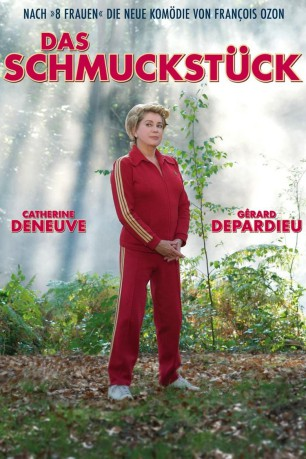

#5908 Das Schmuckstück
 
 IMDB-Wertung: 6.4 / 10
IMDB-Wertung: 6.4 / 10  Metascore: 0
Metascore: 0 
Frankreich, im Jahre 1977: Suzanne Pujol ist die klassische, biedere Hausfrau. Während ihr Mann Robert den typischen Patriarchen mimt, putzt und kocht sie und kümmert sich um die Familie. Robert leitet eine Fabrik und ist wegen seiner schroffen und überheblichen Art bei seinen Arbeitern nicht sonderlich beliebt. Auch seine Familie kann ihn nicht besonders gut leiden. Vor Frauen, besonders vor seiner eigenen, hat er wenig bis überhaupt keinen Respekt. Seine Einstellung ist klar: Es reicht, wenn eine Frau die Meinung des Mannes teilt, da braucht sie keine eigene zu haben! Eines Tages jedoch erleidet Robert einen Herzinfarkt, so dass plötzlich Suzanne in der Fabrik als Ersatz für ihren Mann einspringen und den Posten der Direktorin übernehmen muss. Zur großen Überraschung aller, erweist sie sich dabei als äußerst fähig. Als Robert schließlich wieder auf den Beinen ist und seine alte Stellung als Chef zurück haben möchte, wird die Sache kompliziert...
Jahr: 2010
Dauer: 103 Minuten
FSK: 6
Land: Frankreich Studio: Concorde Home EntertainmentTonspuren:
Untertitel: Deutsch,
Auflösung: 1080p (1920x1036) Größe: 10219 MB
Genre: Komödie
Regisseur: François Ozon
Drehbuch: Ken Shadie
Soundtrack:
Darsteller:
 Catherine Deneuve als Suzanne Pujol
Catherine Deneuve als Suzanne Pujol Gérard Depardieu als Maurice Babin
Gérard Depardieu als Maurice Babin- Fabrice Luchini als Robert Pujol
 Karin Viard als Nadège Dumoulin
Karin Viard als Nadège Dumoulin- Judith Godrèche als Joëlle Pujol
 Jérémie Renier als Laurent Pujol
Jérémie Renier als Laurent Pujol Sergi López als Le routier
Sergi López als Le routier- John Flanders als L'actionnaire anglais
- Sinead Shannon Roche als Madame Marquiset , uncredited
- Évelyne Dandry als Geneviève Michonneau
- Bruno Lochet als André Ferron, le syndicaliste
- Élodie Frégé als Suzanne jeune
- Gautier About als Babin jeune
- Jean-Baptiste Shelmerdine als Robert jeune
- Noam Charlier als Flavien
- Martin De Myttenaere als Stanislas
- Yannick Schmitz als Jean-François
- Christine Desodt als Pilar Sanchez
- Jean-Louis Leclercq als Le médecin
- Alexandre Chaidron als Le journaliste
- Anne Carpriau als Mme. Gilberte Pacot, La vieille ouvrière
- Vincent Collin als Le journaliste d'Europe 1
- Nathalie Laroche als La copine de Nadège
- Pierre Barillet als Le 2e actionnaire
- Sandrine Laroche als Hôtesse Badaboum 1
- Muriel Hobé als Hôtesse Badaboum 2
- Jacqueline Delmarche als Passante marché 1
- Denyse Schwab als Passante marché 2
- Catherine Déry als Passante marché 3
- Yvan Coene als Gunnar
- Hervé Dubois als Maître Ballestra
- Sebiïi Beckers als Worker , uncredited
Datei: X:\2010(N-Z)\Schmuckstück, Das (2010, FSK6, 1920x1036).mkv seit 04.04.2017
Festplatte: HD 2010(G-Z)-2011(A-F)
 Es gibt insgesamt 115 Filme in der Gruppe '2010(N-Z)'
Es gibt insgesamt 115 Filme in der Gruppe '2010(N-Z)'